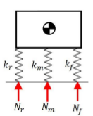

Projects
A curated, though not necessarily comprehensive, list of projects I've worked on professionally, academically, and on my own time. Click on any project to read more about it.
A curated, though not necessarily comprehensive, list of projects I've worked on professionally, academically, and on my own time. Click on any project to read more about it.
MS thesis title:
The effect of body weight support on squat biomechanics
Link to abstract
My Master's thesis combined robotics and biomechanics, the goal being to investigate the effect of providing partial weight support on the forces and moments in the ankle, knee, and hip joints.
The squat and squat-like motions, such as the sit-to-stand and stand-to-sit transitions, are ubiquitous among all people in all parts of the world. Partial weight support is often used in physiotherapeutic settings for the physical rehabilitation of individuals, and assistive or augmentative devices like robotic exoskeletons also provide a form of partial weight support. While the effect of weight support on fundamental motions like walking and running has been well studied, there have been few or no studies on how weight support affects the squatting motion. My thesis aimed to help fill this gap.
I sought to characterize the effect by quantifying the forces and moments in the joints of the lower limb via inverse dynamics, which involves measuring the ground reaction force (GRF) and the positions of the lower limb segments to back-calculate the reactions in each joint based on the position and inertial properties of each limb segment. The free body diagrams above illustrate the technique.
The experimental setup is illustrated in the figure above. To measure the ground reaction force, users performed squats on a force plate–instrumented treadmill (the treadmill wasn't running—it was only used for its force plates). Weight support was provided by means of a harness connected via ropes to pneumatic actuators.
As mentioned above, ground reaction forces were obtained with force plates. The applied force was measured by load cells. The user's motion was recorded with Vicon infrared cameras, shown in the figure above. The figure below shows the markers, which were placed on the subjects' joints and on various points on their legs, as seen by the cameras.

The pneumatic actuators were connected to a National Instruments cRIO embedded controller. To control the actuators, provide a consistent amount of weight support, and automate the data acquisition process, I wrote custom LabVIEW VIs and implemented a PID control loop, allowing the system to conduct trials on its own, informing the user when to prepare for the next set or the next repetition, and waiting until the user was ready before beginning to apply the desired amount of weight support.

To process the raw data and perform the inverse dynamic analysis, I wrote a number of Matlab scripts, the result of which can be seen in the figure above. I also developed a simplified model of the weight-supported squatting motion, illustrated in the diagram below, with which to compare the experimental results.

By running trials at several amounts of weight support and comparing the results by means of ANOVA and post-hoc t-tests, I found that, as expected, the joint moments decreased relatively proportionally with weight support. The more interesting result, though, had to do with the kinematics of the squatting motion. For most of the squatting motion, the kinematics of the supported squat and unsupported squat were similar. However, about 3/4 into the rising portion of the squat, the kinematics of the supported squat diverged considerably, with the users consistently almost "lurching" forward, a fact that was also reflected by the center of pressure of the ground reaction force shifting forward.
The takeaway was that, while weight support predictably alleviates some of the load on the joints during a squat, it can also significantly alter the normal, natural motion of the body. The true cost of these changes to the body's natural biomechanics is unknown—they may be harmless or they may be detrimental. In fact, studies of assistive robotic exoskeletons have found that, even though the exoskeletons ostensibly reduce the load on the body, they oftentimes increase metabolic cost and oxygen consumption, suggesting that the person actually has to work harder with support to compensate for the unnatural movement.
In other words, seemingly straightforward actions can have unforeseen and poorly understood consequences. Any device that affects the body's natural biomechanics must be carefully investigated, even if it seems, intuitively, like it ought to be purely beneficial.
In the power wheelchair industry, the term "mid-wheel drive" refers to a class of wheelchairs possessing six wheels, with the middle wheels being attached to the drive motors. The weight distribution of a power wheelchair (the load borne by each wheel) significantly affects its stability and performance, which are paramount for both user safety and comfort. The ability to analytically model, characterize, and manipulate the weight distribution of a power wheelchair can, therefore, be extremely valuable.
However, a vehicle with six wheels is statically indeterminate, meaning that the normal forces of the wheels on the ground cannot be calculated. Even if we assume the vehicle and weight distribution are symmetric and consider only half the vehicle, if the three wheels lie in the same plane, the system is still indeterminate. This problem is illustrated below.
The traditional solution to this problem involves incorporating the stiffness of the wheels, treating each wheel as a spring. By assuming the deflection of each wheel is equal (i.e., the vehicle remains level), the normal forces can be computed, as shown below.
In the case of the Quantum Edge 2 mid-wheel drive power wheelchair, this approach didn't work—actual measurements of the weight distribution (normal forces) did not match those predicted by this simple model, likely due to the complex and nonlinear relationships between the components of the suspension. Essentially, the suspension components of the different wheels are directly linked. This particular system is not only statically indeterminate, it's also kinematically indeterminate—its geometric configuration cannot be determined without knowing the normal forces (which affect both tire compression and deflection of the suspension springs), but the forces cannot be determined without already knowing its geometric configuration. It is a Catch-22.
To address this, I developed a 5-DOF potential energy model of the system in which the compression of each tire, the height of the base of the power chair, and the pitch angle of the base were allowed to vary. The animation below shows how the compression of the springs in the suspension system changes as the height of the base is varied (for this simplified demonstration, the compression of each tire is held constant, as is the pitch angle of the base).
The animation was made in Python with matplotlib. I also used Python to compute the potential energy of the system in any given configuration (i.e., any given set of values for tire compressions, base height above the ground, and base pitch angle). The potential energy equation for the system, which takes into account the gravitational potential energy of the components of the wheelchair and the elastic potential energy due to deflection of the springs and tires, is shown below.
With the aid of scipy multivariate numerical optimization methods, I used this function to find the configuration of the system that minimized the potential energy, exploiting the fact that a system will tend toward the state in which its potential energy is lowest. This principle, which, in physics and thermodynamics, is known as the minimum total potential energy principle, is commonly used in solid mechanics to solve finite element structural models. The plot below shows how the overall potential energy of the system varies with ground clearance, allowing us to determine the ground clearance at which potential energy is minimized (for the case where the parameters corresponding to the other degrees of freedom are held constant).

My model and solution correctly predicted the ground clearance of the actual Quantum Edge 2 power wheelchair with an accuracy of >95%, and correctly predicted the normal forces to within 80% of the measured values, providing a better understanding of the properties of an otherwise obscure suspension mechanism.
For part of a larger project at Quantum Rehab, I found myself having to design a linear actuator from the ground up, as no existing off-the-shelf solutions met the requirements for our particular application, which had numerous unconventional space restrictions.
I first familiarized myself with the basic principles of leadscrew-based linear motion systems (the free body diagram above is a simple visual example of one component of this process), and used these principles to derive the equations of leadscrew frictional torque specific to our application.
Part of designing an ideal linear actuator for the application involved selecting a motor whose stall torque and no-load speed would allow the actuator to complete its motion in a reasonable amount of time. To that end, I developed a set of equations with which to compute the optimal motor characteristics for the application.

The equation above permits us to obtain the set of actuator no-load speeds (vNL) and stall loads (Fstall) that would enable an actuator to travel its entire stroke length smax within a time T, given a function F(s), which provides the force on the actuator (the force it must overcome) as a function of the stroke length s (note that F(s) depends on the particular application, and is related to the kinematics and dynamics of the system in question). Numerically solving this equation for a range of stall loads Fstall and plotting the result yields the following curve for a desired time T and a hypothetical function F(s) (for brevity, F(s) is not shown here):
In the figure above, which I created using matplotlib, the solid black line represents the set of (Fstall, vNL) values that would allow the actuator to travel its full stroke length in time T—in this case, 18 seconds. Actuators with values in the green region above the curve would complete the motion faster than T and actuators with values in the yellow region beneath the curve would complete the motion more slowly than the desired time T. An actuator with values in the red region would be unable to complete the motion, as the stall load of the actuator would be lower than the maximum load that the actuator would face over the course of the motion.
The same principle can be applied directly to a motor in a linear actuator by considering the torque τ instead of the force (i.e., axial load) F, the angular displacement θ instead of the stroke (i.e., linear displacement) s, and the angular no-load speed ωNL instead of the linear no-load speed vNL:
Having developed these equations, I determined how the parameters would change at different gear ratios (taking into account how inertia is nonlinearly reflected through the leadscrew and gear train to the motor), and wrote a Python script to plot curves like the one above at different gear ratios N.
This provided a solid guideline for selecting both a motor and gearing. In addition to the motor and gearing, my script also helped optimize the leadscrew parameters (pitch, lead, lubricant friction coefficients, and resultant self-locking ability), end fixity to increase the leadscrew critical speed and buckling load, and other factors.
Ultimately, this analytical approach allowed me to design a novel prototype for a new type of linear actuator.